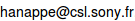

The Low-Energy BOINC project aims at reducing the overall energy requirements of volunteer computing networks and, in particular, of networks using BOINC.
We are particularly interested in the energy reductions that can be obtained using two principles:
1. run the computation while the user is working on the machine, rather than when the machine is idle for long periods of time,
2. make sure that the machine stays in a low-energy mode during the computation.
There are additional criteria that can be taken into account - for example, the ambient temperature (see [1]). We therefore want to measure more than just energy consumption to create a more complete image of the machine.
There are several parts to this project:
1. Create the tools to monitor the real energy consumption of a wide variety of PCs and servers. This involves a combination of software and hardware.
2. Develop the technology to maintain the machine in the performance state that is most efficient in terms of computation performed per energy consumed.
3. Gather sufficient data from a wide variety of machines and environments to model the energy consumption and validate the low-energy approach.
Learn more and participate!
The low-energy BOINC project is open/free. It is open because the source code is available under the GPL. It is also open because we would like to hear feedback and suggestions from you. If you are interested to participate in the discussions, send us an email at .
Acknowledgements

Low-energy BOINC is a project of the Sustainability Group at the Sony Computer Science Laboratory Paris. It is supported by the International Desktop Grid Federation - Support Project (IDGF-SP), EU FP7 Capacities Programme, grant agreement nr RI-312297.